Published: 2022-07-14
Source link: https://www.cnphotos.net/academy/show-69.html
Long exposure photography makes ordinary scenes look otherworldly, like a snapshot from a dream. Technically, it simply keeps the shutter open for longer. You do not need much expertise to get a long exposure, but you need a little practice and patience. Here are some tips and inspiring photos to help you master the art of capturing long exposure shots.
The key to a good long exposure is not expensive gear. You need a stable tripod, a remote shutter release, and a camera with bulb mode. You may also need a neutral density (ND) filter. It sits over the lens to block light, so your shutter can stay open longer. The filter is useful for daytime exposures, but if you do not have one, plan to shoot at night or indoors in the dark.
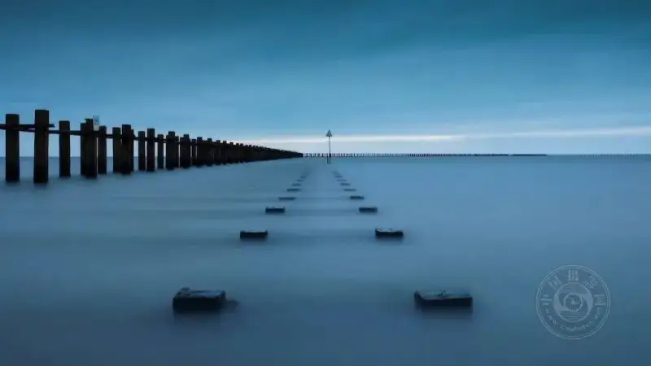
"A New Dawn" ©Mark Coe
Unlike a normal shot, a long exposure takes at least a few minutes. Even a short exposure, such as 5 or 10 seconds, requires setting up the tripod, adjusting camera settings, and mounting a filter. You may also need a few minutes, or longer, to dial in the correct exposure.
For this reason, it is a good idea to plan your shot and composition before you set up and shoot. Otherwise, you may spend minutes on a long exposure, only to find that another angle would have been better.
When you plan, remember that a good long exposure usually has both moving and still elements. For example, you can have moving clouds or water against a still mountain or skyscraper. The contrast between solid and blurred elements creates drama and shows the passage of time.
At night, light sources can also count as moving elements. Though they look still to the naked eye, the light waves they emit actually travel in a certain direction. Your camera records the motion of the light, making it look brighter and more vivid in your photo. Like water or clouds, this light gives the viewer a sense of time passing.
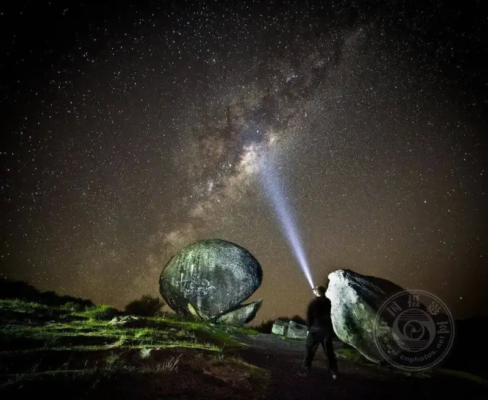
"Milky Way Maintenance" ©Stephen Humpleby
Finding the right balance between motion and stillness takes time. You must predict how a scene will change over time, and that is a challenge even for experienced photographers. If your first few shots do not work, do not give up. Every shot helps you understand the setting better. When you finally catch a wonderful long exposure, the earlier effort pays off.
If you are excited by long exposure but not sure where to start, first narrow down the kind of long exposure you want. In general, long exposure falls into 7 types: flowing water, astrophotography, light painting, light trails from moving vehicles, other light sources, architecture, and indoor long exposure.
1) Long exposurePhotography: flowing water
The ocean, waterfalls, fountains, and rivers are classic long exposure subjects. Flowing water is a popular choice because it is beautiful and predictable. That predictability makes planning your shot easier.
But the popularity of flowing-water long exposure also means the bar is higher. To make your shot stand out, you need something creative. Try interesting angles. Place your camera high, low, or in an unusual position. You can even step into the water and set your tripod in the shallows.
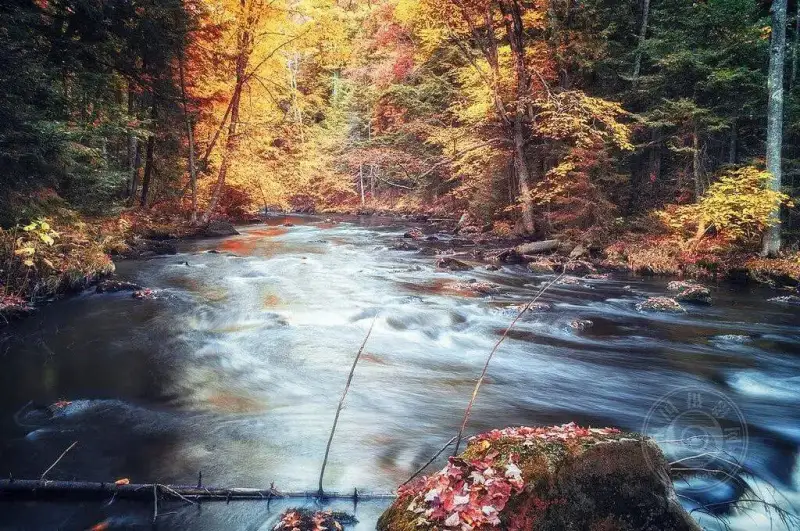
"falling down the river" ©R Casey
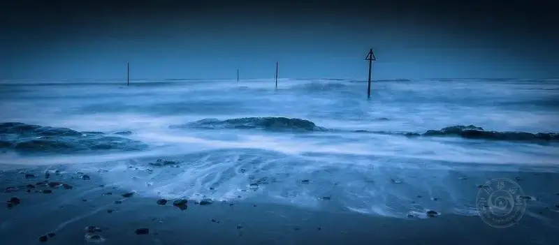
"Westhaven" ©Ben
"Fallen Tree" ©Andy Farmer
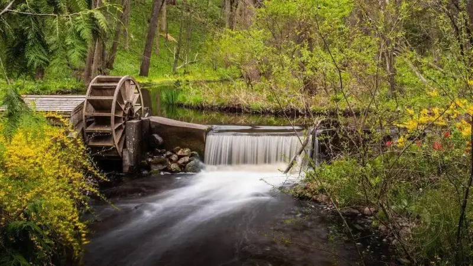
"Untitled" ©Bailiwick Studios
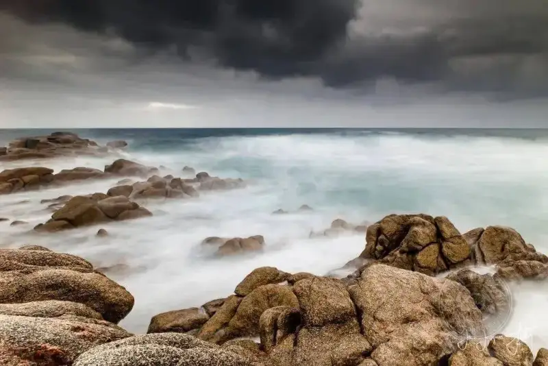
"La Testa de Ventilegne" ©Jean-Jacques Mattei
2) Long exposure photography: astrophotography
One of the best ways to capture the starry sky is with exposure. After a long exposure, the stars become clear and bright instead of nearly invisible. It may look complex because the results are so stunning, but it is actually quite simple.
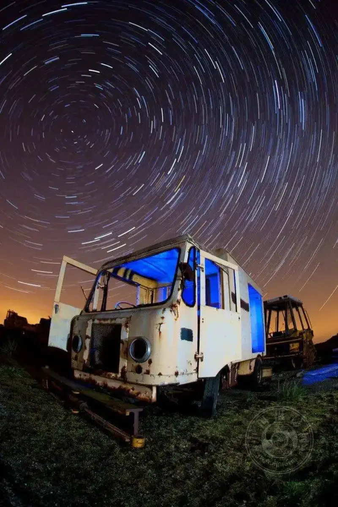
"A small truck" ©cover of darkness
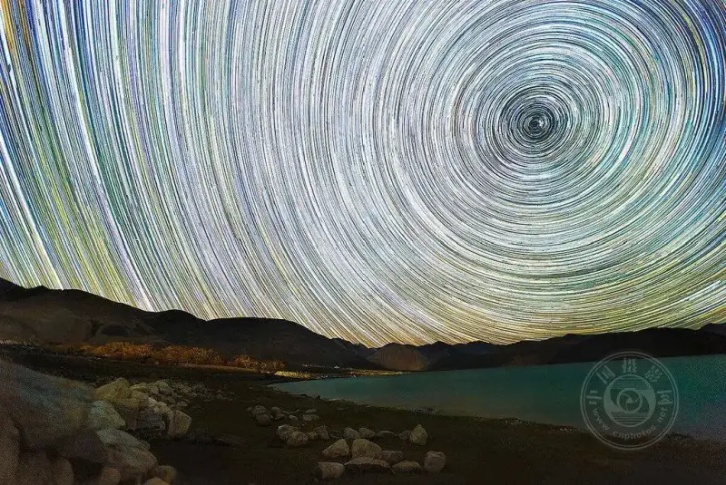
"Pangong Lake Starry Night…" ©Nimit Nigam
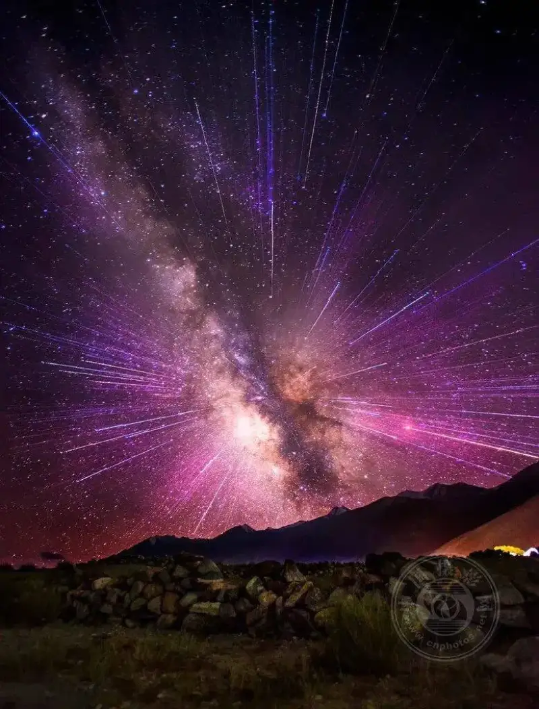
"Big Bang II" ©Nimit Nigam
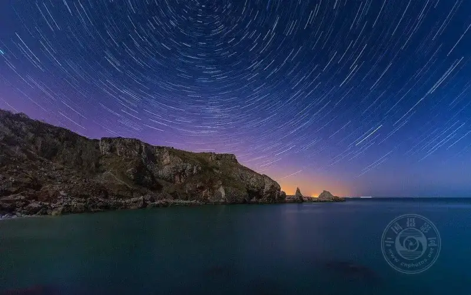
"Ansteys Cove star trails 1" ©Mark Frost
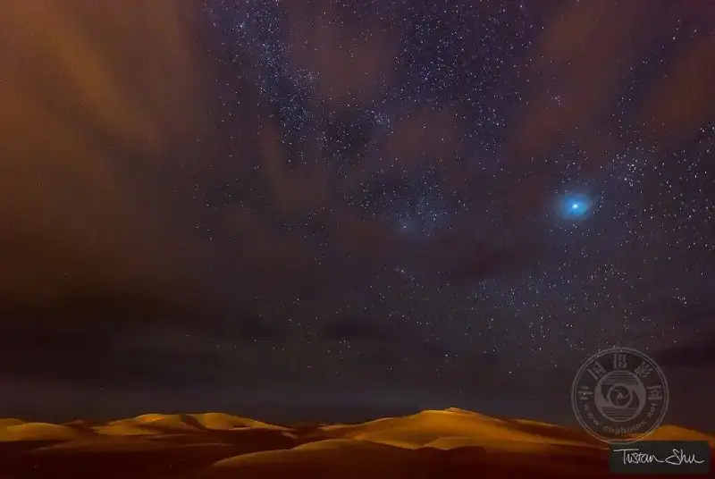
"Stars, Dunes and Clouds in Marzuga Desert" ©Tristan 'Shu' Lebeschu
3) Long exposure photography: light painting
Even on a cloudy night, you can still make interesting long exposures. All you need is a light source to paint the long exposure image. A flashlight, sparkler, or LED light all work well.
You can also ask someone to help you paint with light. You can try it alone, but a helper is a good option. At the very least, a friend can watch your camera and gear while you paint with light, and make sure no one takes your things.
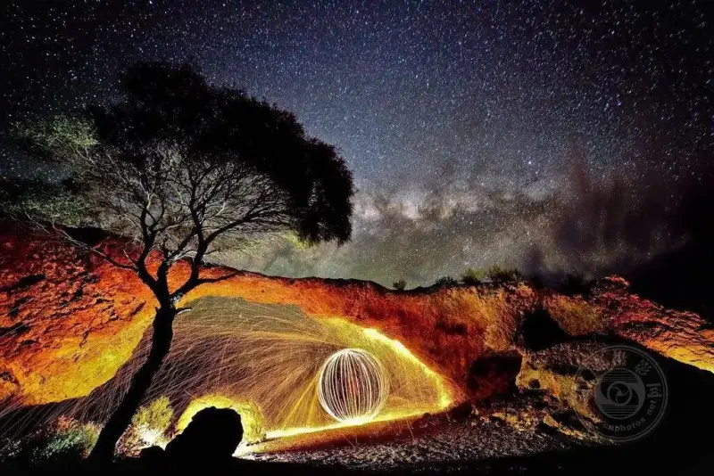
"London Bridge Stars +" ©Stephen Humpleby
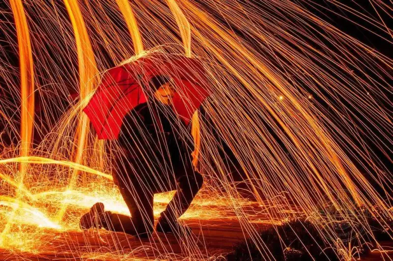
"Sparkling rain" ©Ralph
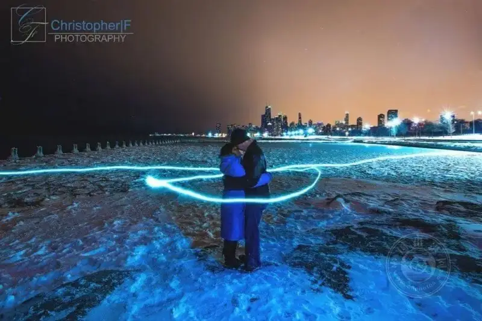
"Kristin & Phil:engaged!" ©Christopher
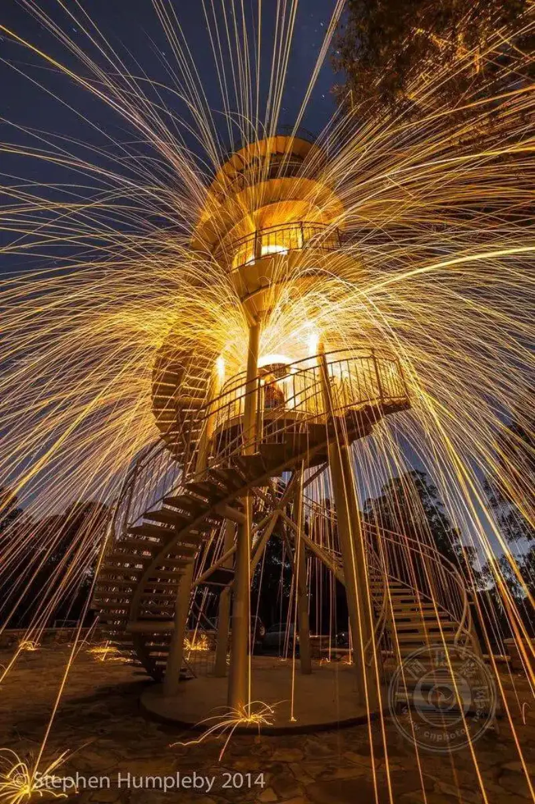
"Lightpainters DNA" ©Stephen Humpleby
"Flour" ©Stephen Humpleby
4) Long exposure photography: light trails from moving vehicles
If you are stuck in the city, shooting light trails from moving vehicles is a great way to spend an evening. It is also simple. Like star trails, the main challenge is finding a place worth shooting. Except here you are not looking for a stunning night sky, but for a visually striking road or highway.
All kinds of places stand out, from bridges to winding country roads. Still, you want something interesting in the photo. That point of interest could be in the background, such as a cool building, or it could be the traffic itself. Roundabouts, large highways, and unusual intersections can all be interesting.
"C D ROM 2" ©Greg David
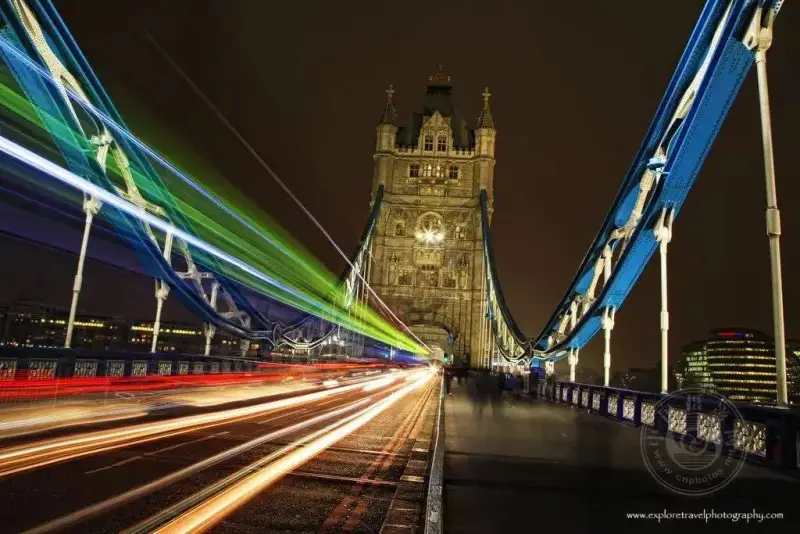
"London Tower Bridge Light Trails" ©Giovanna Tucker
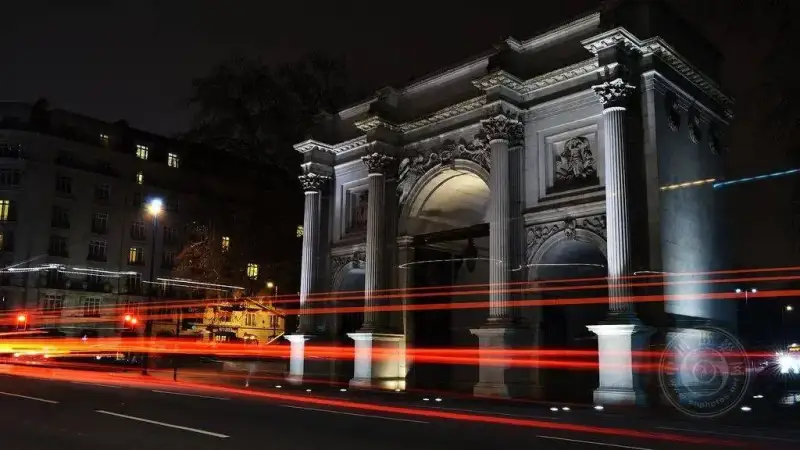
"Marble Madness" ©Dennis
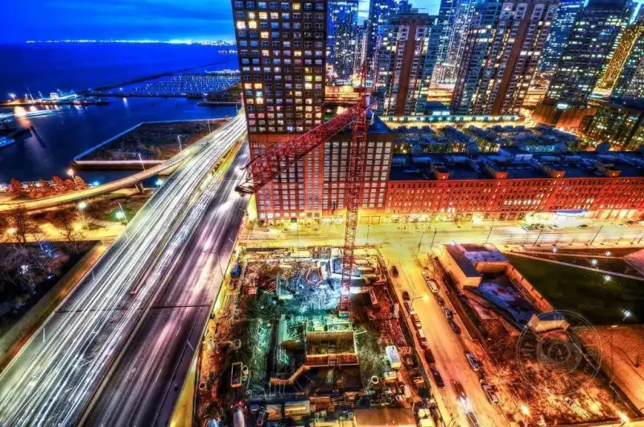
"Going Up!" ©Christopher
5) Long exposure photography: other light sources
Cars and stars are the most popular subjects for night long exposure, but you can shoot countless other light sources. Tunnels, airplanes, lightning, traffic lights, phone booths. Wherever you live, you can find a unique light source to try a long exposure on.
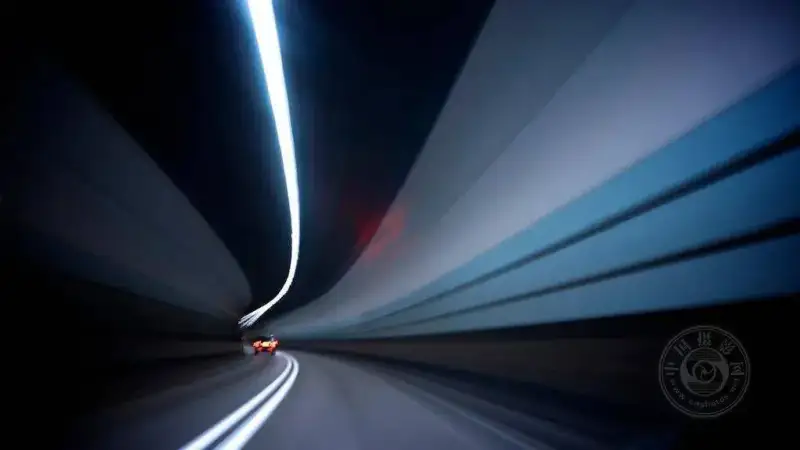
"Car Chase Through Time And Space" ©Mark Coe
"Airplane in the Night Sky" ©CJ Schmit
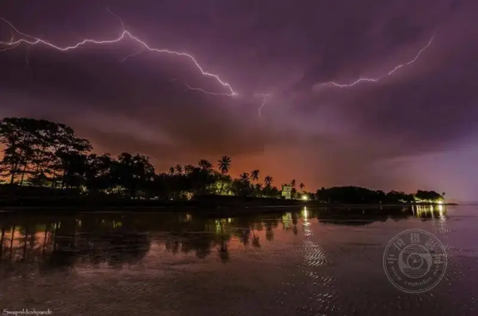
"God's rock concert show" ©swapnil deshpande
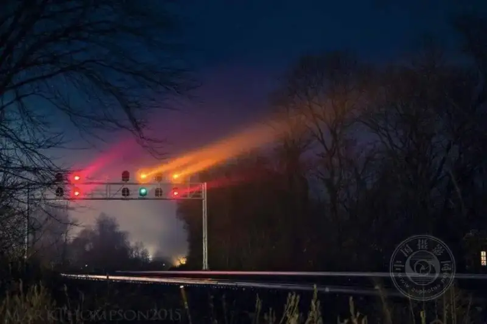
"Approach Limited" ©Mark Thompson
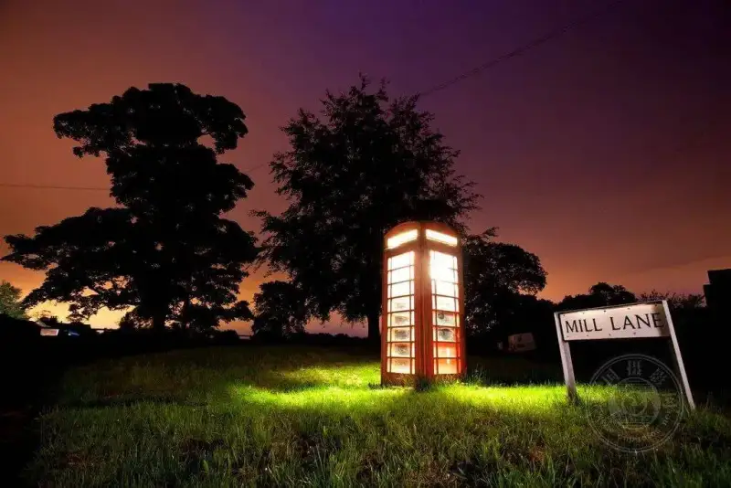
"Phonebox" ©cover of darkness
6) Long exposure photography: architecture
Most long exposure subjects are limited to night or to a part of the day. For example, a beach may be a beautiful subject by day, but once darkness falls it disappears from view. Likewise, a fascinating night sky vanishes when the sun rises.
Buildings are an exception to this rule. They look striking both by day and by night.
When you shoot architecture by day, include something moving in the frame. In most cases, that motion comes either from clouds or from people. With clouds, your main challenge is watching and waiting for the right weather. A good balance of clouds and blue sky gives more contrast and drama. If you are stuck with a cloudless or overcast sky, try adding some people to the photo. This gives you more flexibility.
Whenever you shoot, make sure you do not block pedestrians or traffic. This keeps you safe and lets you stay low-key. If a good shot would force you to get in the way of pedestrians, try shooting at night instead. Then you do not need clouds or people. You only need a little light.
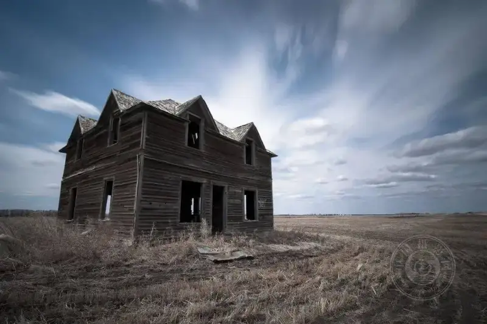
"All eyes to the sky" ©Fistfulofpowder
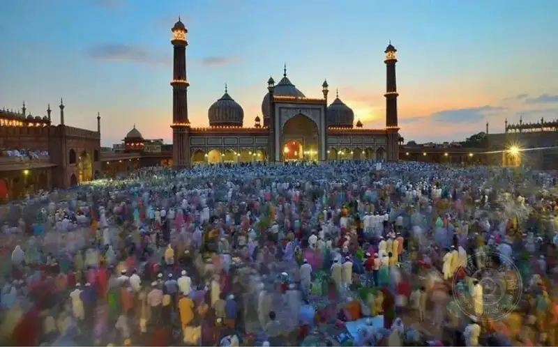
"Alvida Jumma Sunset at Jama Mosque" ©Nimit Nigam
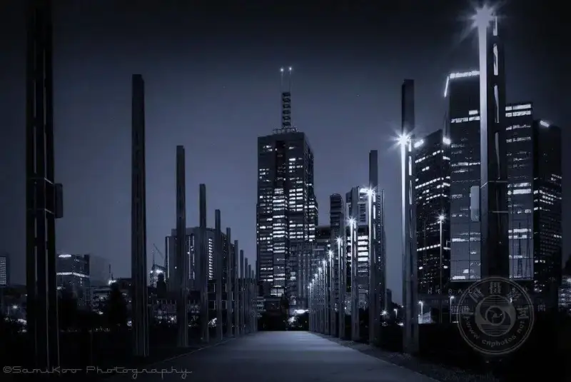
"Cityscape" ©samiKoo
7) Long exposure photography: indoor long exposure
Most long exposures look better with motion, except for indoor shots. Usually, the goal of an indoor long exposure is different. Indoors, you are not trying to capture the passage of time. You are usually trying to solve the problem of poor light indoors.
If you take a normal shot in a dim building, you have two basic choices. For a sharp but noisy photo, use a higher ISO. For a less noisy but softer photo, use a lower ISO.
If you want a sharp, noise-free photo, you must use a long exposure. Because the light is amplified over a long exposure, you can use a low ISO without any blur. You need a tripod, and you shoot a still subject.
This technique lets you capture the strange, beautiful mood of the colored glass in an old theater or cathedral. You cannot take many shots and pick one as usual, but the quality of what you shoot will be higher. Since you really only need one perfect frame, the extra time is worth it.
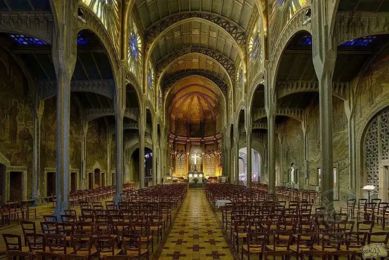
"Eglise Saint Christophe de Javel, Paris." ©Zed the Dragon
"Day 231" ©Srinivasan Venkatesan
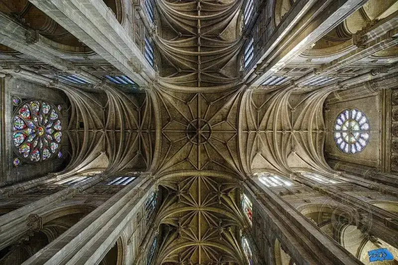
"St Eustache roof I" ©Zed the Dragon
I hope you enjoyed these long exposure tips and example images. Keep them in mind when you go out to shoot your own cool long exposure photos.